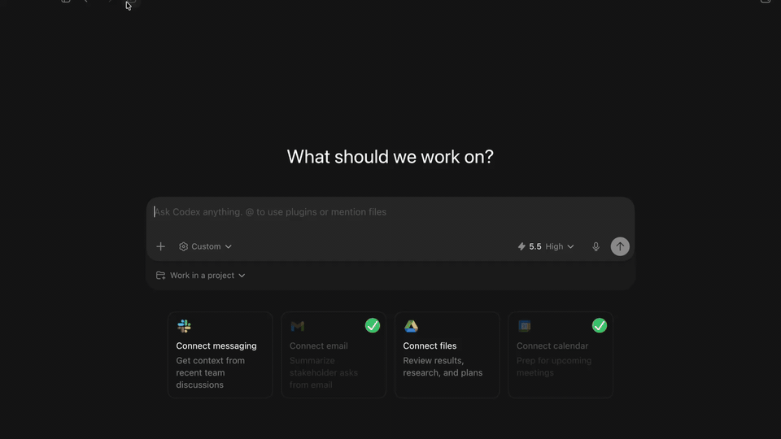

AI
Hostr's AI surface is the MCP server that lets an agent search listings, manage a Hostr session, create or edit listings, negotiate reservations, handle payments, upload images, and inspect trips/bookings through the same SDK paths used by the app.

Structure
../../ai
└── mcp-server # Node/TypeScript HTTP MCP server
../../hostr_cli
├── bin/hostr_daemon.dart
└── lib/src/daemon # Dart stdio daemon used by MCP- MCP server source:
ai/mcp-server - Detailed MCP runtime README:
ai/mcp-server/README.md - Daemon overview:
./daemon/README.md - Action catalog source of truth:
hostr_cli/lib/src/actions/hostr_actions.dart
How the MCP Server Runs
The MCP server is a Node 22 service built from ai/mcp-server/src/index.ts. At startup it:
- Reads environment config from
ai/mcp-server/src/config.ts. - Creates a
HostrDaemonClient. - Creates the Express app.
- Serves HTTP on
PORT, defaulting to8787.
The HTTP app exposes:
In local source mode:
cd ai/mcp-server
npm run dev:localThis serves:
http://127.0.0.1:8787/mcpThe local helper sets the daemon command to:
HOSTR_DAEMON_COMMAND=dart
HOSTR_DAEMON_ARGS="bin/hostr_daemon.dart --stdio --env development"
HOSTR_DAEMON_CWD=../../hostr_cli
HOSTR_DAEMON_STATE_DIR=../../docker/data/mcp-localIn Docker, ai/mcp-server/Dockerfile builds the TypeScript server and an AOT Dart daemon bundle. The runtime container then runs:
HOSTR_DAEMON_COMMAND=/opt/hostr-daemon/bin/hostr_daemon
HOSTR_DAEMON_CWD=/opt/hostr-daemon
HOSTR_DAEMON_STATE_DIR=/data/mcpThe compose service is named mcp. In local compose, ai.hostr.development prefers the source server on the macOS host at host.docker.internal:8787 and falls back to the Docker MCP container when that source server is not running.
MCP to Daemon Flow
sequenceDiagram
participant Agent as MCP Client / Agent
participant HTTP as Node HTTP + OAuth
participant MCP as MCP Tool Router
participant Bridge as HostrDaemonClient
participant Daemon as Dart hostr-daemon
participant SDK as Hostr SDK / Nostr / Blossom / Swaps
Agent->>HTTP: OAuth login and POST /mcp
HTTP->>MCP: Verify bearer token and route tool call
MCP->>Bridge: callAction(pubkey, action, input)
Bridge->>Daemon: JSON line on stdin
Daemon->>SDK: Run Hostr action in session(pubkey)
SDK-->>Daemon: Result or issue
Daemon-->>Bridge: JSON line on stdout
Bridge-->>MCP: Parsed result
MCP-->>Agent: MCP tool result + optional UI metadataNode owns client-facing protocol concerns: OAuth, MCP resources/tools, HTTP uploads, request tracing, widgets, and public asset URLs. Dart owns Hostr behavior: session state, Nostr Connect, relay queries, listing/reservation models, Blossom uploads through an authenticated session, swaps, and escrow-aware actions.
Auth and Sessions
MCP calls use OAuth bearer tokens. The token's pubkey claim selects the Hostr daemon session:
context.runtime.session(pubkey)Write actions should not accept a pubkey in tool input. The bridge passes the token pubkey separately, and the daemon rejects authenticated writes when the active Hostr session does not match that token.
If the OAuth token is still valid but the NIP-46 signer is offline, tools return auth_required with a sessionAction hint. The agent should call hostr_session_connect, show the returned Nostr Connect URI or QR image, then wait for the signer approval.
Development Notes
- Edit action definitions in Dart first, then regenerate MCP types with:
cd hostr_cli dart run bin/generate_mcp_types.dart /path/to/hostr - Run MCP checks from
ai/mcp-server:npm run typecheck npm run test:unit - Keep daemon stdout reserved for JSON responses. Logs belong on stderr so the Node bridge can parse stdout safely.
HOSTR_DAEMON_TIMEOUT_MSdefaults to120000. On timeout, the Node bridge sends a cooperative daemoncancelrequest.